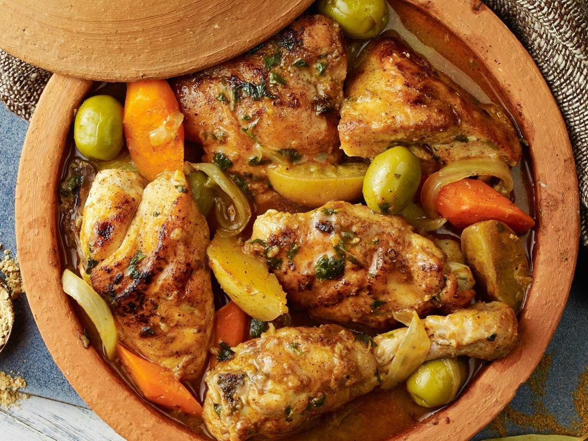

Tagine de Frango (Marrocos)
Ingredientes
Frango e temperos
- 1 kg de coxas e sobrecoxas de frango (sem pele, se preferir)
- Sal e pimenta-do-reino a gosto
- 2 colheres (chá) de cúrcuma
- 1 colher (chá) de gengibre em pó
- 1 colher (chá) de cominho
- 1 colher (chá) de páprica doce
- 1 colher (chá) de canela
- 2 dentes de alho picados
- Suco de 1/2 limão
Base e cozimento
- 2 colheres (sopa) de azeite
- 1 cebola grande fatiada
- 1 cenoura em rodelas
- 1 punhado de azeitonas verdes sem caroço
- 1/2 xícara de caldo de frango ou água
- 1 punhado de coentro ou salsa picada
- 1 colher (sopa) de mel (opcional, para toque marroquino)
- Raspas de limão ou limão preservado (opcional, mas tradicional)
Modo de Preparo
- Tempere o frango com sal, pimenta, cúrcuma, gengibre, cominho, páprica, canela, alho e suco de
limão, misturando bem para envolver todos os pedaços.
- Aqueça o azeite em uma panela ou tagine e doure ligeiramente os pedaços de frango.
- Adicione a cebola, a cenoura, as azeitonas, o mel e as raspas de limão, mexendo para misturar os
sabores.
- Junte o caldo de frango, tampe e cozinhe em fogo baixo por cerca de 50–60 minutos, até que o frango
esteja macio e o molho espesso e aromático.
- Ajuste o sal, finalize com coentro ou salsa e, se quiser, polvilhe amêndoas torradas na hora de
servir.
 1h20
•
1h20
•
 Serve 6 pessoas
•
Serve 6 pessoas
•
 Médio
Médio